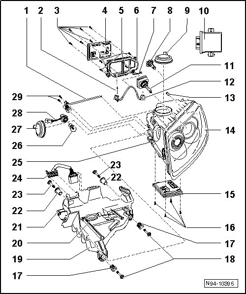

HID Headlamps with Cornering Lamp Assembly Overview, through 11.06
HID Headlamps with Cornering Lamp Assembly Overview, through 11.06
• After performing work which can affect headlamp adjustment, check headlamp adjustment and adjust headlamps if necessary.

- Tightening specifications --> [ Front Lamps ] [1][2]Headlamp
1 - Adjusting shaft for low beam and high beam height adjustment
2 - Connector
• to Left High-intensity Gas Discharge Lamp Control Module (J343) or Right High-intensity Gas Discharge Lamp Control Module (J344)
3 - Screws
• For mounting left/right HID lamp control modules to bracket.
4 - Left High-intensity Gas Discharge Lamp Control Module (J343) and Right High-intensity Gas Discharge Lamp Control Module (J344)
• Left High-intensity Gas Discharge Lamp Control Module (J343) and Right High-intensity Gas Discharge Lamp Control Module (J344) is not capable of On Board Diagnostic (OBD).
• Removing and installing --> [ HID Headlamp Control Module ] HID Headlamps with Cornering Lamp, through 11.06
5 - Screws
• For mounting bracket to headlamp housing.
6 - Bracket
7 - Cable ties
• For securing wire to bracket.
8 - Left Cornering Lamp (L148) or Right Cornering Lamp (L149)
• Bulb H7 12V, 55 W
• Replacing --> [ Cornering Lamp Bulb ] HID Headlamps with Cornering Lamp, through 11.06
• Checking --> [ Headlamp Range/Cornering Lamp Control Module Output Diagnostic Test
Mode ] HID Headlamps with Cornering Lamp, through 11.06
9 - Cap
10 - Headlamp Range/Cornering Lamp Control Module (J745)
• Component location: at center under instrument panel
• Removing and installing --> [ Headlamp Range/Cornering Lamp Control Module ] HID Headlamps with Cornering Lamp, through 11.06
• Coding --> [ Headlamp Range/Cornering Lamp Control Module, Coding ] HID Headlamps with Cornering Lamp, through 11.06
• Output Diagnostic Test Mode (DTM) --> [ Headlamp Range/Cornering Lamp Control Module Output Diagnostic Test
Mode ] HID Headlamps with Cornering Lamp, through 11.06
• Adapting --> [ Headlamp Range/Cornering Lamp Control Module, Adapting ] HID Headlamps with Cornering Lamp, through 11.06
• If Headlamp Range/Cornering Lamp Control Module (J745) is coded, headlamp basic setting must then be performed .
11 - High intensity gas discharge lamp (L13) and High intensity discharge lamp (L14) ("Bi-Xenon")
CAUTION!
Note usage and safety notes for gas discharge headlamps --> [ HID Headlamps Safety Precautions ] HID Headlamps Safety Precautions
• Type D1S, 35 W
• Replacing --> [ HID Bulb ] HID Headlamps with Cornering Lamp, through 11.06
• Checking --> [ Vehicle Electrical System Output Diagnostic Test Mode ] Initial Inspection and Diagnostic Overview
12 - Wiring
• between Left High Intensity Gas Discharge (HID) Lamp (L13) or Right High Intensity Gas Discharge (HID) Lamp (L14) and Left High-intensity Gas Discharge Lamp Control Module (J343) or Right High-intensity Gas Discharge Lamp Control Module (J344)
13 - Left Parking Lamp (M1) and Right Parking Lamp (M3)
• Lamp 12V, W 5 W
• Replacing --> [ Parking Lamp Bulb ] HID Headlamps with Cornering Lamp, through 11.06
• Checking --> [ Vehicle Electrical System Output Diagnostic Test Mode ] Initial Inspection and Diagnostic Overview
14 - Headlamp
• Removing and installing --> [ Headlamps, through 11.06 ] Headlamps, through 11.06
• Correcting installation position of headlamp --> [ Headlamps Correcting Installation Position ] Procedures
• Perform basic setting of headlamps.
15 - Left Headlamp Power Output Stage (J667) or Right Headlamp Power Output Stage (J668)
• Removing and installing --> [ Headlamp Power Output Stages ] HID Headlamps with Cornering Lamp, through 11.06
• After installing a new headlamp power output stage, Headlamp Range/Cornering Lamp Control Module (J745) must be coded --> [ Headlamp Range/Cornering Lamp Control Module, Coding ] HID Headlamps with Cornering Lamp, through 11.06 and then basic setting of headlamps must be performed.
16 - Screws
• For mounting left/right headlamp power output stage to headlamp
17 - Adjustment bushings
18 - Screws
• For front headlamp mount
19 - Headlamp mount
• Headlamp Mount, 6-Cylinder Gasoline, Removing and Installing --> [ Headlamp Mount, through 11.06 ] Headlamp Mount, through 11.06
• Headlamp Mount, 10-Cylinder TDI and 8-Cylinder Gasoline, Removing and Installing --> [ Headlamp Mount, through 11.06 ] Headlamp Mount, through 11.06
20 - Securing clip
21 - Locking bolt
22 - Alignment bushings
• For mounting bolts of rear headlamp mount
23 - Screws
• For rear headlamp mount
24 - Connector
25 - Securing clip
26 - Left Front Turn Signal Lamp (M5) and Right Front Turn Signal Lamp (M7)
• Bulb 12V, PY 21 W
• Replacing --> [ Front Turn Signal Bulb ] HID Headlamps with Cornering Lamp, through 11.06
• Checking --> [ Vehicle Electrical System Output Diagnostic Test Mode ] Initial Inspection and Diagnostic Overview
27 - Cap
28 - Lamp socket with grip piece and harness connector
• for Left Front Turn Signal Lamp (M5) and Right Front Turn Signal Lamp (M7)
29 - Screws
• For mounting the adjusting shaft for low beam and high beam height adjustment.
- Left Headlamp Reflector Adjustment Solenoid (N395) and Right Headlamp Reflector Adjustment Solenoid (N396)
• Left Headlamp Reflector Adjustment Solenoid (N395) and Right Headlamp Reflector Adjustment Solenoid (N396) are located inside the headlamp and cannot be removed or adjusted.
• Headlamp must be replaced if damaged --> [ Headlamps, through 11.06 ] Headlamps, through 11.06.
• Checking --> [ Vehicle Electrical System Output Diagnostic Test Mode ] Initial Inspection and Diagnostic Overview
- Left Swivel Module Position Sensor (G474) or Right Swivel Module Position Sensor (G475)
• Left Swivel Module Position Sensor (G474) and Right Swivel Module Position Sensor (G475) are located inside the headlamp and cannot be replaced or adjusted separately.
• Headlamp must be replaced if damaged --> [ Headlamps, through 11.06 ] Headlamps, through 11.06.
- Left Headlamp Beam Adjusting Motor (V48) and Right Headlamp Beam Adjusting Motor (V49)
• Left Headlamp Beam Adjustment Motor (V48) and Right Headlamp Beam Adjustment Motor (V49) is located inside the headlamp and must not be replaced.
• Headlamp must be replaced if damaged --> [ Headlamps, through 11.06 ] Headlamps, through 11.06.
• Checking --> [ Headlamp Range/Cornering Lamp Control Module Output Diagnostic Test
Mode ] HID Headlamps with Cornering Lamp, through 11.06
- Left Dynamic Cornering Lamp Motor (V318) or Right Dynamic Cornering Lamp Motor (V319)
• Left Dynamic Cornering Lamp Motor (V318) and Right Dynamic Cornering Lamp Motor (V319) is located inside the headlamp and must not be replaced.
• Headlamp must be replaced if damaged --> [ Headlamps, through 11.06 ] Headlamps, through 11.06.
• Checking --> [ Headlamp Range/Cornering Lamp Control Module Output Diagnostic Test
Mode ] HID Headlamps with Cornering Lamp, through 11.06